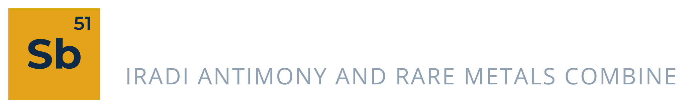

IARMC
Our 2025 results on iarmc.com: 15,100 tonnes of contained antimony mined.
♥ 21 · Comment · Share
Antimony from Irad since 1961.
Regulus, 99.65% Sb and higher
For flame retardants and glass
From the Chatkal mill
Our 2025 results on iarmc.com: 15,100 tonnes of contained antimony mined.
♥ 21 · Comment · ShareRegulus, 99.65% Sb and higher
For flame retardants and glass
From the Chatkal mill
Chatkal Rare Earth Facility
The Iradi Antimony and Rare Metals Combine (IARMC CJSC), formed in 1994 from the Sary-Bulak Antimony Works (1961) and the Chatkal Chemical Smelting Complex. Mines, mill and smelter for antimony and its by-products. About 4,700 people. Head office: 14 Metallurgy Avenue, Talas.
Ирадский комбинат сурьмы и редких металлов (ЗАО «ИКСРМ»), с 1994 года. Сары-Булакское рудоуправление и Чаткальский химико-металлургический комплекс. Около 4 700 работников.
| Works | Sary-Bulak Antimony Works, Chatkal Chemical Smelting Complex, Kemer Antimony Mine, Chatkal Antimony Processing Mill, Chatkal Rare Earth Facility |
|---|---|
| Staff | about 4,710 (end of 2025) |
| Address | 14 Metallurgy Avenue, Talas |
From 19. Six months' training on full pay, then shifts underground. Hostel and meals.
Electrical safety group III or higher; rotation 15 days on, 15 off.
Chemistry diploma. Day shifts.
To apply: apply at the personnel office of each works or through iarmc.com.
Our 2025 results on iarmc.com: 15,100 tonnes of contained antimony mined.
♥ 21 · Comment · ShareНабор учеников на Сары-Булакское рудоуправление: проходчики, электрослесари, машинисты. Общежитие, спецодежда.
♥ 36 · Comment · ShareNo reviews yet.